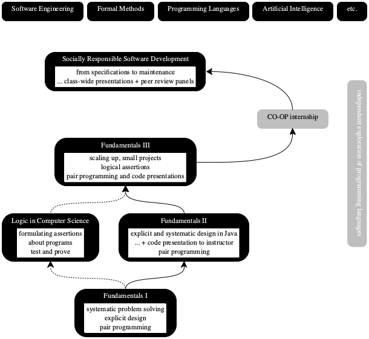

Prelude
Every undergraduate curriculum in computer science comes with at least one highly intensive software course. In this course, students work on a large-ish project; develop several components that must interact; meet several deadlines; and learn to research for building blocks on their own. It is a course that teaches more than programming but not yet software engineering at scale. It is a course on software development.
In a programming course, students write programs that neither they nor anyone else ever looks at again after the grading is done. A course on software development differs in that students must maintain code beyond the first time they deliver it: react to new test cases; fix bugs; add functionality. Ideally, this revisiting of code should happen several times. Software engineering courses should go beyond code maintenance and cover work in teams, meaning it may involve the entire class as one team; work on extremely large code bases, meaning code that students cannot produce in a single semester; work on problems whose solutions require trade-offs, meaning features vs time, central algorithms optimized for space, time, or energy; and perhaps on special industrial topics.
software is a message from one developer to another across time;
the students’ programming must account for this “messaging;”
the instructor must run a semester-long project that creates stress situations (deadlines, rotating partners, switching code bases) so that (1) students demonstrate “design under pressure” and (2) they learn to appreciate what “messaging” implies.
Clearly, thinking is the difficult part of software development, especially expressing thinking clearly and reflecting this clarity in the code. This course aims to implement “thinking” as social processes so
developers must pair-program to continuously check their thinking;
pairs must submit their work for inspections to avoid “pair think;”
students must learn to ask hard questions about other students’ code.
For working developers, the book is a help if they missed a course on software development in their education. While reading the book isn’t the same as working through the project under the guidance of an instructor, developers should be able to relate the ideas to their hands-on experiences with projects.
Developing a Mind Set
develop software in a systematic fashion, and
develop software with, and for, other developers.
In other words, the two imperatives are intertwined. Systematic software development means a lot of hard thinking, which happens in the developer’s mind. No software tools in even the best interactive development environments check the thinking of a developer. They can’t. It takes another human being to make sure the thinking is on the right track, and that this thinking is systematically expressed in code.
On the flip side is the developer who is tasked with fixing a bug in old code or
with adding a new feature. Nobody can fix code without some minimal
comprehension of the software system’s organization, the purpose of each of its
pieces, and the code in the relevant pieces. It takes time to read and
comprehend code—
Students must experience both sides of this coin. On the producer side, they must develop code with partners. Partners must learn to critique each other and to learn from critique from the rest of the class, which represents their team. The partner and the class represent future developers and maintainers. On the consumer side, students must expect to switch partners and to take over someone else’s code base.
In short, changing students’ mindset requires hard work on managing continuous and intense feedback from each other. While programming must happen in pairs, code inspections must be public and must be solo-performances. To motivate the latter, a code inspection starts with “assume your partner has left the team.” Solo presentations check whether each partner completely understands the code base, so that if one of them leaves, the other one isn’t lost. Similarly, some of the students must play the role of colleagues who take over the code. These peers also represent the future, unmet developers and maintainers. It is therefor their task to ask penetrating and potentially unpleasant questions about every aspect of the design and the code. Without exception, such interactions can lead to unhappy conversations. Yet, they are for the benefit of the future developer and for the students’ way of thinking about their profession.
Being socially responsible even in just our profession is hard. Practice makes
perfect—

The Context, for the Instructor
At my current institution, the course sits atop three programming courses. See figure 1 for a dependency diagram. The first course, Fundamentals I, introduces students to the idea that good programming calls for a systematic approach, starting with a careful analysis and description of the relevant sets of data all the way to the creation of a unit test suite. It does not use an existing, “industrial strength” programming language but several languages specifically designed for this audience of novices and an approach that insists on systematic programming. Even though the systematic design idea is about type-driven programming, these teaching languages lack a type system, because a large majority of students end up at co-op and internship positions where they use untyped languages. It is therefore imperative to expose students to the mental discipline of using types for program design even in the absence of a type checker.
Fundamentals II injects two ideas into the curriculum: type checking and object-oriented programming. The goal is to demonstrate that the principles of systematic program design from Fundamentals I apply in the context of a commercially successful language, Java. The programming assignment and the recurring programming project are still quite small.
Fundamentals III scales up the ideas to projects with graphical views,
complex controls, and interesting models. The course begins to emphasize the
proper design of interfaces and programming to interfaces—
Socially Responsible Software Development, short: SRSD and also known as Fundamentals IV, is the source of the material in this book. It Choosing a Language is the last course where instructors and teaching assistants inspect students’ code in depth. Students get to pick their favorite language and IDE, partly so that they can focus on program design and partly so that they can assess how good they are in the language ecosystem of their choice.
Most importantly, the course is much more about the non-technical aspects of programming-as-thinking than the first three; it is about the social interactions that foster responsible thinking. While students program in pairs in the first three courses, they do so with some instruction but without much supervision. SRSD spends a large amount of time on the social aspect of programming-thinking. Students program in pairs, present their work to their peers on a regular basis, and critique each other extensively. To reduce the negativity, the instructor must teach that one doesn’t criticize the creator of code but only the code.
Practicing social software development in a classroom setting is challenging. I have spent over two decades teaching and refining these pedagogic ideas. Quite a few of them failed. This book collects the successful ones.
This Book and Its Parts
The book consists of five chapters plus a postlude, following this prelude. The different lengths of these chapters do not indicate differences in importance.
Chapter I spells out the most basic truth about software projects: most of them die
a rapid death. Yes, it is normal for projects to die. What matters are the
survivors. When software survives, it survives for decades—
Chapter II describes the psychology and sociology of software development.
Developers are creators and artisans. Like all other artsy creators, they tend
to invest their ego into their creations, which is good because it means they
strive for excellence. But, by identifying with their creations, they also tend
to consider criticism of their creations as criticisms of their ego. Hence the
goal is to develop a healthy balance—
Chapter III explains how a software system comes about, how to build one, and how to think about their maintainers at this stage already. Unlike the programs students write in the first few courses, a software system consists of many components (packages, modules, frameworks). When a team follows a somewhat traditional development paths, it may create documents that describe the components, the dependencies among them, the construction plans, and the interfaces. Even if the team employs an “agile” or “extreme coding” approach, sooner or later the need for these documents arises. And these non-code pieces exist so that, in the future, developers can easily and quickly navigate the code base, distinguish task-relevant from irrelevant pieces, and properly use components via interfaces. The way to get this right is to have students try, have basics checked, fail, try again, and so on, every week of the course.
Chapter IV .. components .. interfaces ..
Chapter V is about the programming skills it takes to build and maintain a
software system in a socially responsible manner. Conversely, ii is about the
basics of what reviewers should look out for when they inspect code. While
students at this stage are expected to have a basic grasp of programming, this
book aims to make code development systematic even under pressure so that
the resulting code expresses the reasoning behind itself clearly. Here
“systematic” ranges from small things—
The postlude draws a parallel between software development and life, and vice versa.
Doing things with the future—
Dear Instructor:
Note QR symbols in the margins of the book point to supplementary notes for instructors. Check out the two above: one on what universities cannot teach and on why students should use their favorite language. These notes explain how to manage the course: from setting up the project and managing, to dealing with in-person code reviews.
Teaching is hard. Teaching this course is the hardest task you will ever tackle. It will also be the most rewarding one. Good luck!